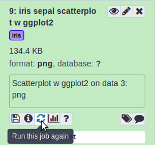

This practical aims at familiarizing you with the Galaxy user interface.
It will teach you how to perform basic tasks such as importing data, running tools, working with histories, creating workflows and sharing your work.
Not everyone has the same background and that’s ok!
Comment: Results may vary
Your results may be slightly different from the ones presented in this tutorial due to differing versions of tools, reference data, external databases, or because of stochastic processes in the algorithms.
The Iris flower data set, also known as Fisher’s or Anderson’s Iris data set, is a multivariate dataset introduced by the British statistician and biologist Ronald Fisher in his 1936 paper (Fisher 1936).
Each row of the table represents an iris flower sample, describing its species and the dimensions in centimeters of its botanical parts, the sepals and petals.
You can find more detailed information about this dataset on its dedicated Wikipedia page.
What does Galaxy look like?
Hands-on: Log in or register
Open your favorite browser (Chrome/Chromium, Safari, or Firefox, but not Internet Explorer/Edge!)
Choose Login or Register from the navigation bar at the top of the page
If you have previously registered an account with this particular instance of Galaxy (user accounts are not shared between public servers!), proceed by logging in with your registered public name, or email address, and your password.
If you need to create a new account, click on Register here instead.
Comment: Different Galaxy servers
The particular Galaxy server that you are using may look slightly different than the one shown in this training.
Galaxy instance administrators can choose the exact version of Galaxy they would like to offer and can customize its look and feel to some extent.
The basic functionality will be rather similar across instances, so don’t worry!
The Galaxy interface consists of three main parts:
The available tools are listed on the left
Your analysis history is recorded on the right
The central panel will let you run analyses and view outputs
Create a history
Galaxy allows you to create analysis histories. A history can be thought of as an electronic experimental lab book; it keeps track of all the tools and parameters you used in your analysis. From such a history, a workflow can be extracted; this workflow can be used to easily repeat the analysis on different data.
Think of a workflow as a cooking recipe with a list of ingredients (datasets) and a set of instructions
(pipeline of operations) that describes how to prepare or make something (such as a plot, or a new dataset).
The order of operations is important as very often the next operation takes as input the result of the previous operations. For instance, when baking
a cake, you would first sift the flour and then mix it with eggs as it would be impossible to sift the flour afterward.
That is what we call a pipeline. To make a full meal, we may need to combine multiple recipes (pipelines) together.
The finalized pipelines can be generalized as a workflow. If we use cooking as an analogy, a workflow could represent an entire menu with all the recipes for each meal.
In other words, using a workflow makes it possible to apply the same procedure to a different dataset, just by changing the input.
Hands-on: Create history
Make sure you start from an empty analysis history.
To create a new history simply click the new-history icon at the top of the history panel:
Rename your history to be meaningful and easy to find. For instance, you can choose Galaxy 101 for everyone as the name of your new history.
Click on galaxy-pencil (Edit) next to the history name (which by default is “Unnamed history”)
Type the new name
Click on Save
To cancel renaming, click the galaxy-undo “Cancel” button
If you do not have the galaxy-pencil (Edit) next to the history name (which can be the case if you are using an older version of Galaxy) do the following:
Click on Unnamed history (or the current name of the history) (Click to rename history) at the top of your history panel
Type the new name
Press Enter
Upload the Iris dataset
Hands-on: Data upload
Import the file iris.csv from Zenodo or from the data library (ask your instructor)
https://zenodo.org/record/1319069/files/iris.csv
Copy the link location
Click galaxy-uploadUpload Data at the top of the tool panel
Select galaxy-wf-editPaste/Fetch Data
Paste the link(s) into the text field
Press Start
Close the window
As an alternative to uploading the data from a URL or your computer, the files may also have been made available from a shared data library:
Go into Data (top panel) then Data libraries
Navigate to the correct folder as indicated by your instructor.
On most Galaxies tutorial data will be provided in a folder named GTN - Material –> Topic Name -> Tutorial Name.
Select the desired files
Click on Add to Historygalaxy-dropdown near the top and select as Datasets from the dropdown menu
In the pop-up window, choose
“Select history”: the history you want to import the data to (or create a new one)
Click on Import
Renamegalaxy-pencil the dataset to iris
Click on the galaxy-pencilpencil icon for the dataset to edit its attributes
In the central panel, change the Name field
Click the Save button
Check the datatype
Click on the history item to expand it to get more information.
The datatype of the iris dataset should be csv.
Changegalaxy-pencil the datatype if it is different than csv.
Option 1: Datatypes can be autodetected
Option 2: Datatypes can be manually set
Click on the galaxy-pencilpencil icon for the dataset to edit its attributes
In the central panel, click on the galaxy-chart-select-dataDatatypes tab on the top
Click the Auto-detect button to have Galaxy try to autodetect it.
Click on the galaxy-pencilpencil icon for the dataset to edit its attributes
In the central panel, click galaxy-chart-select-dataDatatypes tab on the top
In the galaxy-chart-select-dataAssign Datatype, select csv from “New type” dropdown
Tip: you can start typing the datatype into the field to filter the dropdown menu
Click the Save button
Add an #iris tag galaxy-tags to the dataset
Datasets can be tagged. This simplifies the tracking of datasets across the Galaxy interface. Tags can contain any combination of letters or numbers but cannot contain spaces.
To tag a dataset:
Click on the dataset to expand it
Click on Add Tagsgalaxy-tags
Add tag text. Tags starting with # will be automatically propagated to the outputs of tools using this dataset (see below).
Press Enter
Check that the tag appears below the dataset name
Tags beginning with # are special!
They are called Name tags. The unique feature of these tags is that they propagate: if a dataset is labelled with a name tag, all derivatives (children) of this dataset will automatically inherit this tag (see below). The figure below explains why this is so useful. Consider the following analysis (numbers in parenthesis correspond to dataset numbers in the figure below):
a set of forward and reverse reads (datasets 1 and 2) is mapped against a reference using Bowtie2 generating dataset 3;
dataset 3 is used to calculate read coverage using BedTools Genome Coverageseparately for + and - strands. This generates two datasets (4 and 5 for plus and minus, respectively);
datasets 4 and 5 are used as inputs to Macs2 broadCall datasets generating datasets 6 and 8;
datasets 6 and 8 are intersected with coordinates of genes (dataset 9) using BedTools Intersect generating datasets 10 and 11.
Now consider that this analysis is done without name tags. This is shown on the left side of the figure. It is hard to trace which datasets contain “plus” data versus “minus” data. For example, does dataset 10 contain “plus” data or “minus” data? Probably “minus” but are you sure? In the case of a small history like the one shown here, it is possible to trace this manually but as the size of a history grows it will become very challenging.
The right side of the figure shows exactly the same analysis, but using name tags. When the analysis was conducted datasets 4 and 5 were tagged with #plus and #minus, respectively. When they were used as inputs to Macs2 resulting datasets 6 and 8 automatically inherited them and so on… As a result it is straightforward to trace both branches (plus and minus) of this analysis.
Make sure the tag starts with a hash symbol (#), which will make the tag stick not only to this dataset, but also to any results derived from it.
This will help you make sense of your history.
Pre-processing
Often, one or more data pre-processing step(s) may be required to proceed with the analysis.
In our case, the tools we will use require tab-separated input data and assume there is no header line. Since our data is comma-separated and has a header line, we will have to perform the following pre-processing steps to prepare it for the actual analysis:
Format conversion
Header removal
Convert format
First, we will convert the file from comma-separated to tab-separated format. Galaxy has built-in format converters we can use for this.
Hands-on: Converting dataset format
Convertgalaxy-pencil the CSV file (comma-separated values) to tabular format (tsv; tab-separated values)
Click on the galaxy-pencilpencil icon for the dataset to edit its attributes
In the central panel, click on the galaxy-gearConvert tab on the top
In the upper part galaxy-gearConvert, select tabular (using csv-to-tabular)
Click the Create dataset button to start the conversion.
Renamegalaxy-pencil the resulting dataset to iris tabular
Click on the galaxy-pencilpencil icon for the dataset to edit its attributes
In the central panel, change the Name field
Click the Save button
View the generated file by clicking on the galaxy-eye (eye) icon
Question
How many header lines does our file have?
The file has one header line, it contains the column names.
Remove header
Now it is time to run your first tool! We saw in the previous step that our file has 1 header line. This line does not contain any data, but the names of each column. We will now remove that line from our file before moving on to our analysis.
Comment: Tip: Finding your tool
Different Galaxy servers may have tools available under different sections, therefore it is often useful to use the search bar at the top of the tool panel to find your tool.
Additionally different servers may have multiple, similarly named tools which accomplish similar functions. When following tutorials, you should use precisely the tools that they describe. For real analyses, however, you will need to search among the various options to find the one that works for you.
Hands-on: Removing header
Remove Beginning with the following parameters:
Remove first: 1 (to remove the first line only)
param-file“from”: select the iris tabular file from your history
Click Run Tool
Comment: Tip: search for the tool
Use the tools search box at the top of the tool panel to find Remove beginningtool.
Renamegalaxy-pencil the dataset to iris clean
Click on the galaxy-pencilpencil icon for the dataset to edit its attributes
In the central panel, change the Name field
Click the Save button
Click on the new history item to expand it
Question
Which tags are present on this resulting dataset? (You may have to refresh the history panel to see the tags)
How many samples (lines) does our dataset contain?
The output of Remove beginningtool is also tagged with the label iris. Tags beginning with a hashtag (#) will propagate; they will appear on any datasets derived from your original tagged file.
There are 150 lines in our file (we can see this under the file name when we have expanded the history item). This means we have 150 samples.
Viewgalaxy-eye the contents of the resulting file.
You should see that the header line is now no longer present.
Data Analysis: What does the dataset contain?
Now we are going to inspect the dataset using simple tools in order to get used to the Galaxy interface and answer basic questions.
How many different species are in the dataset?
In order to answer this question, we will have to look at column 5 of our file, and count how many different values (species) appear there. There are several ways we could do this in Galaxy. One approach might be to first extract this column from the file, and then count how many unique lines the file contains. Let’s do it!
Hands-on: Extract species
Cut columns from a table with the following parameters:
“Cut columns”: c5
“Delimited by”: Tab
param-file“From”: iris clean dataset
Renamegalaxy-pencil the dataset to iris species column
Click on the galaxy-pencilpencil icon for the dataset to edit its attributes
In the central panel, change the Name field
Click the Save button
Viewgalaxy-eye the resulting file
Unique ( Galaxy version 1.1.0) occurrences of each record with the following parameters:
param-file“File to scan for unique values”: iris species column (the output from Cuttool)
Renamegalaxy-pencil the dataset to iris species
Viewgalaxy-eye the resulting file
Question
How many different species are in the dataset?
What are the different Iris species?
There are 3 species.
The 3 different Iris species are:
setosa
versicolor
virginica
Now we have our answer! There are 3 different Iris species in our file.
Like we mentioned before, there are often multiple ways to reach your answer in Galaxy. For example, we could have done this with just a single tool, Grouptool as well.
(This tool also can be searched for by the term “grouping” )
Hands-on: Exercise: Grouping dataset
Try answering this question (how many Iris species are in the file?) again, using a different approach:
Tool: Group data by a column and perform aggregate operation on other columns tool
Input dataset: iris clean dataset to answer the same question.
Did you get the same answer as before?
Renamegalaxy-pencil the dataset to iris species group
Group with the following parameters:
“Select data” select iris clean dataset
“Group by column”: Column: 5
This approach should give the same answer. There are often multiple ways to do a task in Galaxy, which way you choose is up to you!
How many samples by species are in the dataset?
Now that we know that there are 3 different species in our dataset, our next objective is determining how many samples of each species we have. To answer this, we need to look at column 5 again, but instead of just determining how many unique values there are, we need to count how many times each of them occurs.
You may have noticed there were more parameters in the Grouptool tool that we did not use. Let’s have a closer look and see if any of them might help us answer this question.
Comment: Tool Help
To find out more about how a tool works, look at the help text (below the Execute button).
Look at the tool help for the Grouptool. Do you see any parameters that could help answer this question?
Looking at the tool help for Grouptool, we see that we can also perform aggregate operations such as mean, median, sum, max, min, count (and more). Counting sounds just like what we need, let’s try it!
Hands-on: Grouping dataset and adding information
Re-rungalaxy-refresh the Grouptool with the following parameters:
param-file“Select data”: iris clean
param-select“Group by column”: Column: 5
param-repeat“Insert operation”
“Type”: Count
“On column”: Column: 1
Expand one of the output datasets of the tool (by clicking on it)
Click re-run galaxy-refresh the tool
This is useful if you want to run the tool again but with slightly different paramters, or if you just want to check which parameter setting you used.
Renamegalaxy-pencil the dataset to iris samples per species group
Viewgalaxy-eye the resulting file.
Question
How many samples per species are in the dataset?
We have 50 samples per species:
1
2
setosa
50
versicolor
50
virginica
50
Analysis: How to differentiate the different Iris species?
Our objective is to find what distinguishes the different Iris species (Figure 1). We know that we have 3 species of iris flowers, with
50 samples for each:
setosa
versicolor
virginica
These species look very much alike as shown on the figure below.
Figure 1: Three species of Iris flowers (Image attributions: versicolor by Danielle Langlois licensed under CC BY-SA 3.0, retrieved from WikiMedia; virginica by Christer Johansson licensed under CC BY-SA 3.0, retrieved from WikiMedia; setosa by and used with permission of Sonja Keohane, retrieved from www.twofrog.com)
And our objective is to find out whether the features we have been given for each species can help us to highlight the differences between the 3 species.
In our dataset, we have the following features measured for each sample:
Petal length
Petal width
Sepal length
Sepal width
Comment: petal and sepal
The image below shows you what the terms sepal and petal mean.
Hands-on: Get the mean and sample standard deviation of Iris flower features
Datamash ( Galaxy version 1.1.0) with the following parameters:
param-file“Input tabular dataset”: iris tabular
“Group by fields”: 5
“Sort input”: Yes
“Input file has a header line”: Yes
“Print header line”: Yes
“Print all fields from input file”: No
“Ignore case when grouping”: Yes
In “Operation to perform on each group”:
param-repeat“Insert Operation to perform on each group”
“Type”: Mean
“On column”: c1
param-repeat“Insert Operation to perform on each group”
“Type”: Sample Standard deviation
“On column”: c1
param-repeat“Insert Operation to perform on each group”
“Type”: Mean
“On column”: c2
param-repeat“Insert Operation to perform on each group”
“Type”: Sample Standard deviation
“On column”: c2
param-repeat“Insert Operation to perform on each group”
“Type”: Mean
“On column”: c3
param-repeat“Insert Operation to perform on each group”
“Type”: Sample Standard deviation
“On column”: c3
param-repeat“Insert Operation to perform on each group”
“Type”: Mean
“On column”: c4
param-repeat“Insert Operation to perform on each group”
“Type”: Sample Standard deviation
“On column”: c4
Rename the dataset to iris summary and statistics
Click on the galaxy-pencilpencil icon for the dataset to edit its attributes
In the central panel, change the Name field
Click the Save button
Viewgalaxy-eye the generated file
Question
Can we differentiate the different Iris flower species?
From the results, we can see that the average Iris setosa petal length is lower than 1.5 with a relatively small standard deviation (<0.2).
The same can be observed for Iris setosa petal widths. These numbers are much smaller (width and length) than Iris versicolor and Iris virginica petals.
We can then use these characteristics to differentiate Iris setosa from the two other species (I. versicolor and I. virginica). On the other hand,
we cannot easily differentiate Iris Versicolor from Iris Virginica. Further analysis is necessary.
Visualize Iris dataset features with two-dimensional scatterplots
Let’s visualize the Iris dataset to see how the features depend on each other, and
check whether we can spot any immediate patterns.
Hands-on: Plot iris feature pairs in two dimensions
Scatterplot w ggplot2 ( Galaxy version 3.3.5+galaxy0) with the following parameters:
param-file“Input tabular dataset”: iris clean
“Column to plot on x-axis”: 1
“Column to plot on y-axis”: 2
“Plot title”: Sepal length as a function of sepal width
“Label for x axis”: Sepal length
“Label for y axis”: Sepal width
In “Advanced Options”:
“Data point options”: User defined point options
“relative size of points”: 2.0
“Plotting multiple groups”: Plot multiple groups of data on one plot
“column differentiating the different groups”: 5
“Color schemes to differentiate your groups”: Set 2 - predefined color pallete
In “Output Options”:
Additional output format: PDF
Viewgalaxy-eye the resulting plot:
Rename the dataset to iris sepal scatterplot
Question
What does this scatter plot tell us about Iris species?
Make a new scatter plot, this time with Petal length versus Petal width.
Can we differentiate between the three Iris species?
Instead of clicking on Scatterplot w ggplot2tool again, it is possible to recall the previous scatterplot parameters by clicking on re-run button and updating the parameters we wish to modify.
Hands-on: Re-run the tool
Click on the galaxy-refresh icon (Run this job again) for the output dataset of Scatterplot w ggplot2tool
This brings up the tool interface in the central panel with the parameters set to the values used previously to generate this dataset.
We get similar results than with Summary and statistics: Iris setosa can clearly be distinguished from Iris versicolor and
Iris virginica. We can also see that sepal width and length are not sufficient features to differentiate Iris versicolor from Iris
virginica.
Scatterplot w ggplot2 ( Galaxy version 3.3.5+galaxy0) with the following parameters:
param-file“Input tabular dataset”: iris clean
“Column to plot on x-axis”: 3
“Column to plot on y-axis”: 4
“Plot title”: Petal length as a function of petal width
“Label for x axis”: Petal length
“Label for y axis”: Petal width
In “Advanced Options”:
“Data point options”: User defined point options
“relative size of points”: 2.0
“Plotting multiple groups”: Plot multiple groups of data on one plot
“column differentiating the different groups”: 5
“Color schemes to differentiate your groups”: Set 2 - predefined color pallete
Your new output dataset will look something like this:
We can better differentiate between the 3 Iris species but for some samples the petal length versus width is still insufficient
to differentiate Iris versicolor from Iris virginica. And as before, Iris setosa can easily be distinguished from the two other species.
Galaxy management
Convert your analysis history into a workflow
When you look carefully at your history, you can see that it contains all the steps of our analysis, from the beginning to the end. By building this history we have actually built a complete record of our analysis with Galaxy preserving all parameter settings applied at every step. But when you receive new data, or a new report is requested, it would be tedious to do each step over again. Wouldn’t it be nice to just convert this history into a workflow that we will be able to execute again and again?
Galaxy makes this very easy with the Extract workflow option. This means any time you want to build a workflow, you can just perform the steps once manually, and then convert it to a workflow, so that next time it will be a lot less work to do the same analysis.
Hands-on: Extract workflow
Clean up your history: remove any failed (red) jobs from your history by clicking on the galaxy-delete button.
This will make the creation of the workflow easier.
Click on galaxy-gear (History options) at the top of your history panel and select Extract workflow.
The central panel will show the content of the history in reverse order (oldest on top), and you will be able to choose which steps to include in the workflow.
If you had problems extracting your workflow in the previous step, we provide a working copy for you,
which you can import to Galaxy and use for the next sections (see below how to import a workflow to Galaxy).
Click on Workflow on the top menu bar of Galaxy. You will see a list of all your workflows.
Click on galaxy-uploadImport at the top-right of the screen
Paste the following URL into the box labelled “Archived Workflow URL”: https://training.galaxyproject.org/training-material/topics/introduction/tutorials/galaxy-intro-101-everyone/workflows/main_workflow.ga
Click the Import workflow button
Below is a short video demonstrating how to import a workflow from GitHub using this procedure:
Video: Importing a workflow from URL
We can examine the workflow in Galaxy’s workflow editor. Here you can view/change the parameter settings of each step, add and remove tools, and connect an output from one tool to the input of another, all in an easy and graphical manner. You can also use this editor to build workflows from scratch.
Hands-on: Editing our workflow
Open the workflow editor
Click on the dropdown menu galaxy-dropdown (triangle icon) to the right of your workflow name.
Select Edit to launch the workflow editor.
You should see something like this:
When you click on a workflow step, you will get a view of all the parameter settings for that tool on the right-hand side of your screen (the Details section)
You can also change the parameter settings of your workflow here, and also do more advanced configuration.
Hiding intermediate outputs
We can tell Galaxy which outputs of a workflow are important and should be shown in our history when we run it, and which can be hidden.
By default, all outputs will be shown
Click the checkbox next to the outputs to mark them as important:
outfile in Uniquetool
out_file1 in Grouptool step
This should be the Group tool where we performed the counting, you can check which one that is by clicking on it and looking at the parameter settings in the Details box on the right.
png in both Scatterplot w ggplot2tool steps
Now, when we run the workflow, we will only see these final outputs
i.e. the two dataset with species, the dataset with number of samples by species and the two scatterplots.
When a workflow is executed, the user is usually primarily interested in the final product and not in all intermediate steps. By default all the outputs of a workflow will be shown, but we can explicitly tell Galaxy which outputs to show and which to hide for a given workflow. This behaviour is controlled by the little checkbox in front of every output dataset:
Renaming output datasets
When we performed the analysis manually, we often renamed output datasets to something more meaningful
We can do the same in a workflow (see the tip box below)
Let’s rename the outputs we marked as important with the checkbox (and thus do not hide) to more meaningful names:
Uniquetool, output outfile: rename to categories tool
Grouptool, output out_file1: rename to samples per category
Rename the scatterplot outputs as well, remember to choose a generic name, since we can now also run this on data other than iris plants.
Open the workflow editor
Click on the tool in the workflow to get the details of the tool on the right-hand side of the screen.
Scroll down to the Configure Output section of your desired parameter, and click it to expand it.
Under Rename dataset, give it a meaningful name
Save your workflow (important!) by clicking on the galaxy-save icon at the top right of the screen.
Return to the analysis view by clicking on the Home icon galaxy-home (or Analyze Data on older Galaxy versions) at the top menu bar.
Comment
We could validate our newly built workflow by running it on the same input datasets that we used at the start of this tutorial, in order to make sure we do obtain the same results.
Run workflow on different data
Now that we have built our workflow, let’s use it on some different data. For example, let us explore the diamonds R dataset with it.
Hands-on: Create a new history and upload a new data
Create a new history and give it a name.
To create a new history simply click the new-history icon at the top of the history panel:
Import the file diamonds.csv from Zenodo or from the data library (ask your instructor)
Click galaxy-uploadUpload Data at the top of the tool panel
Select galaxy-wf-editPaste/Fetch Data
Paste the link(s) into the text field
Press Start
Close the window
As an alternative to uploading the data from a URL or your computer, the files may also have been made available from a shared data library:
Go into Data (top panel) then Data libraries
Navigate to the correct folder as indicated by your instructor.
On most Galaxies tutorial data will be provided in a folder named GTN - Material –> Topic Name -> Tutorial Name.
Select the desired files
Click on Add to Historygalaxy-dropdown near the top and select as Datasets from the dropdown menu
In the pop-up window, choose
“Select history”: the history you want to import the data to (or create a new one)
Click on Import
Renamegalaxy-pencil the dataset to diamonds
Click on the galaxy-pencilpencil icon for the dataset to edit its attributes
In the central panel, change the Name field
Click the Save button
Add a propagating tag galaxy-tags (e.g. #diamonds)
Datasets can be tagged. This simplifies the tracking of datasets across the Galaxy interface. Tags can contain any combination of letters or numbers but cannot contain spaces.
To tag a dataset:
Click on the dataset to expand it
Click on Add Tagsgalaxy-tags
Add tag text. Tags starting with # will be automatically propagated to the outputs of tools using this dataset (see below).
Press Enter
Check that the tag appears below the dataset name
Tags beginning with # are special!
They are called Name tags. The unique feature of these tags is that they propagate: if a dataset is labelled with a name tag, all derivatives (children) of this dataset will automatically inherit this tag (see below). The figure below explains why this is so useful. Consider the following analysis (numbers in parenthesis correspond to dataset numbers in the figure below):
a set of forward and reverse reads (datasets 1 and 2) is mapped against a reference using Bowtie2 generating dataset 3;
dataset 3 is used to calculate read coverage using BedTools Genome Coverageseparately for + and - strands. This generates two datasets (4 and 5 for plus and minus, respectively);
datasets 4 and 5 are used as inputs to Macs2 broadCall datasets generating datasets 6 and 8;
datasets 6 and 8 are intersected with coordinates of genes (dataset 9) using BedTools Intersect generating datasets 10 and 11.
Now consider that this analysis is done without name tags. This is shown on the left side of the figure. It is hard to trace which datasets contain “plus” data versus “minus” data. For example, does dataset 10 contain “plus” data or “minus” data? Probably “minus” but are you sure? In the case of a small history like the one shown here, it is possible to trace this manually but as the size of a history grows it will become very challenging.
The right side of the figure shows exactly the same analysis, but using name tags. When the analysis was conducted datasets 4 and 5 were tagged with #plus and #minus, respectively. When they were used as inputs to Macs2 resulting datasets 6 and 8 automatically inherited them and so on… As a result it is straightforward to trace both branches (plus and minus) of this analysis.
The diamonds dataset comes from the well-known ggplot2 package developed by Hadley Wickham and was initially collected from the Diamond Search Engine in 2008.
The original dataset consists of 53940 specimen of diamonds, for which it lists the prices and various properties.
For this training, we have created a simpler dataset from the original, in which only the five columns relating to the price and the so-called 4 Cs (carat, cut, color and clarity) of diamond characteristics have been retained.
Carat refers to the weight of the diamond when measured on a scale
Cut refers to the quality of the cut and can take the grades Fair, Good, Very Good, Premium and Ideal
Color describes the overall tint, or lack thereof, of the diamond from colorless/white to yellow and is given on a letter scale ranging from D to Z (D being the best, known as colorless).
Clarity describes the amount and location of naturally occuring “inclusions” found in nearly all diamonds on a scale of eleven grades ranging from Flawless (the ideal situation) to I3 (Included level 3, the worst quality).
As a further simplification, our training dataset has the qualities in the color and clarity columns re-encoded as integer values (1-23 for color qualities D-Z, and 1-11 for the clarity levels from Flawless to I3).
With this adjustment, we can reuse our workflow on the data, and analyze and visualize it following the same steps as we took for the Iris dataset.
Hands-on: Run workflow
To analyze the diamonds price/4 Cs dataset by reusing our workflow:
Open the workflow menu (top menu bar).
Find the workflow you made in the previous section,
Select the option Run.
The central panel will change to allow you to configure and launch the workflow.
Select the diamonds dataset as the input dataset.
Customize the first scatter plot:
This step is preconfigured to plot column 1 along the x and column 2 along the y axis, while grouping by column 5.
This is fine and will result in price getting plotted against carat with grouping by cut, but you would want to adjust the plot title and axis labels accordingly:
Change “Plot title” to Diamond price as a function of carat with cut as a factor
Change “Label for x axis” to Weight of the diamond (carat)
Change “Label for y axis” to Price (US dollars)
Customize the second scatter plot.
This one is preconfigured to plot column 3 along the x and column 4 along the y axis, which, for our new data, would plot color as a function of clarity. However, we would rather want to stick to plotting price against weight in carat as in the first plot, but group by clarity instead of by cut this time, so:
Change “Column to plot on x-axis” to 1
Change “Column to plot on y-axis” to 2
Change “Plot title” to Diamond price as a function of carat with clarity as a factor
Change “Label for x axis” to Weight of the diamond (carat)
Change “Label for y axis” to Price (US dollars)
And finally in “Advanced Options” change “column differentiating the different groups” to 4 (clarity).
Click Run workflow.
Once the workflow has started, you will initially be able to see all its steps, but the unimportant intermediates will disappear after they complete successfully:
Question
How many cut category are there in the Diamond dataset ?
How many samples are there in each cut category ?
What do you notice about the relationship between price and carat ?
Based on the plot showing Price vs. Carat with Clarity as a factor, do you think clarity accounts for some of the variance in price? Why ?
There are 5 different cut categories:
Fair
Good
Ideal
Premium
Very Good
We have the following number of samples in each cut category:
1
2
Fair
1610
Good
4906
Ideal
21551
Premium
13791
Very Good
12082
Using any of the scatter plots we made, we can see an obvious positive (non-linear) relationship between both variables: as carat size increases, price also increases. There is also very clear discrete values that carat size takes on, which are those vertical strips on the graph.
Holding carat weight constant, we see on the scatter plot shown above that diamonds with lower clarity are almost always cheaper than diamonds with better clarity: diamonds that are “Internally Flawless” are the most expensive whereas “I1” are the least expensive clarity types. So clarity explains a lot of the variance found in price!
Share your work
One of the most important features of Galaxy comes at the end of an analysis. When you have published striking findings, it is important that other researchers are able to reproduce your in-silico experiment. Galaxy enables users to easily share their workflows and histories with others.
Sharing your history allows others to import and access the datasets, parameters, and steps of your history.
Access the history sharing menu via the History Options dropdown (galaxy-history-options), and clicking “history-share Share or Publish”
Share via link
Open the History Optionsgalaxy-history-options menu at the top of your history panel and select “history-share Share or Publish”
galaxy-toggleMake History accessible
A Share Link will appear that you give to others
Anybody who has this link can view and copy your history
Publish your history
galaxy-toggleMake History publicly available in Published Histories
Anybody on this Galaxy server will see your history listed under the Published Histories tab opened via the galaxy-histories-activityHistories activity
Share only with another user.
Enter an email address for the user you want to share with in the Please specify user email input below Share History with Individual Users
Your history will be shared only with this user.
Finding histories others have shared with me
Click on the galaxy-histories-activityHistories activity in the activity bar on the left
Click the Shared with me tab
Here you will see all the histories others have shared with you directly
Note: If you want to make changes to your history without affecting the shared version, make a copy by going to History Optionsgalaxy-history-options icon in your history and clicking Copy this History
Hands-on: Share history
Share your history with your neighbour.
Find the history shared by your neighbour. Histories shared with specific users can be accessed by those users under their top masthead “User” menu under Histories shared with me.
Conclusion
trophy Well done! You have just performed your first analysis in Galaxy. Additionally you can share your results and methods with others.
You've Finished the Tutorial
Please also consider filling out the Feedback Form as well!
Key points
Galaxy provides an easy-to-use graphical user interface for often complex command-line tools
Galaxy keeps a full record of your analysis in a history
Workflows enable you to repeat your analysis on different data
Galaxy can connect to external sources for data import and visualization purposes
Galaxy provides ways to share your results and methods with others
Did you use this material as an instructor? Feel free to give us feedback on how it went.
Did you use this material as a learner or student? Click the form below to leave feedback.
Hiltemann, Saskia, Rasche, Helena et al., 2023 Galaxy Training: A Powerful Framework for Teaching! PLOS Computational Biology 10.1371/journal.pcbi.1010752
Batut et al., 2018 Community-Driven Data Analysis Training for Biology Cell Systems 10.1016/j.cels.2018.05.012
@misc{introduction-galaxy-intro-101-everyone,
author = "Anne Fouilloux and Nadia Goué and Christopher Barnett and Michele Maroni and Olha Nahorna and Dave Clements and Saskia Hiltemann",
title = "Galaxy Basics for everyone (Galaxy Training Materials)",
year = "",
month = "",
day = ""
url = "\url{https://training.galaxyproject.org/training-material/topics/introduction/tutorials/galaxy-intro-101-everyone/tutorial.html}",
note = "[Online; accessed TODAY]"
}
@article{Hiltemann_2023,
doi = {10.1371/journal.pcbi.1010752},
url = {https://doi.org/10.1371%2Fjournal.pcbi.1010752},
year = 2023,
month = {jan},
publisher = {Public Library of Science ({PLoS})},
volume = {19},
number = {1},
pages = {e1010752},
author = {Saskia Hiltemann and Helena Rasche and Simon Gladman and Hans-Rudolf Hotz and Delphine Larivi{\`{e}}re and Daniel Blankenberg and Pratik D. Jagtap and Thomas Wollmann and Anthony Bretaudeau and Nadia Gou{\'{e}} and Timothy J. Griffin and Coline Royaux and Yvan Le Bras and Subina Mehta and Anna Syme and Frederik Coppens and Bert Droesbeke and Nicola Soranzo and Wendi Bacon and Fotis Psomopoulos and Crist{\'{o}}bal Gallardo-Alba and John Davis and Melanie Christine Föll and Matthias Fahrner and Maria A. Doyle and Beatriz Serrano-Solano and Anne Claire Fouilloux and Peter van Heusden and Wolfgang Maier and Dave Clements and Florian Heyl and Björn Grüning and B{\'{e}}r{\'{e}}nice Batut and},
editor = {Francis Ouellette},
title = {Galaxy Training: A powerful framework for teaching!},
journal = {PLoS Comput Biol} Computational Biology}
}
Funding
These individuals or organisations provided funding support for the development of this resource
4 stars:
Liked: In most tutorials, I do all the steps, then at the end don't feel like I learned anything. Not the case here. There was enough repetiton so I felt like I learned each step. Also, the steps were formated so I had to do a little thinking for myself. You did a good job of covering a lot of content. Plus, this was my first exposure to the concept of workflows, so that's kind of life changing.
Disliked: There were a couple of places where the software must have been updated since this was written. At one point I spent a lot of time looking for a gear icon that is no longer used to get to the next step. At another spot the tutorial gave you instructions for editing the workflow by clicking on the drop down menu and selecting Edit. Now the edit button is just right there without clicking on the drop down menu. Not a big deal, but it was confusing. Particularly the first time I encountered it. Learning this stuff can be overwhelming and anything you can do to make it easy is good.
July 2024
5 stars:
Liked: slow pace was easy to follow, applicability of te workflow for very different datasets. great first introduction to Galaxy
5 stars:
Liked: well explained
Disliked: I don't know
September 2023
5 stars:
Liked: step wise instructions
Disliked: a screenshot of the output/result would be helpful
August 2023
5 stars:
Liked: every thing
July 2023
5 stars:
Liked: The clarity of the explanation and the easy-to-use slack tutorial
5 stars:
Liked: Very user friendly
April 2023
5 stars:
Liked: Step by step guide
March 2023
5 stars:
Liked: explanation of operation.
5 stars:
Liked: the workshop webpage and its specifications
Disliked: n/a
November 2022
4 stars:
Liked: the flow of presentation
July 2022
5 stars:
Liked: the interaction of images and descriptions
Disliked: more images of the interface step y step
June 2022
5 stars:
Liked: learning how to use a workflow on a different dataset
5 stars:
Liked: Ease of use
5 stars:
Liked: Nice and understandable! I'm a software engineer tasked with setting up and administrating a Galaxy server, so I don't have a bioinformatics background. However, I was able to understand this tutorial and now know why Galaxy is such a powerful tool!
April 2022
5 stars:
Liked: hands on
5 stars:
Liked: It was easy to follow but learn usefull things
Questions:


Open image in new tab


{kind=link}
{kind=link}
{kind=link}
{kind=link}
{kind=link}
{kind=link}
{kind=link}
{kind=link}